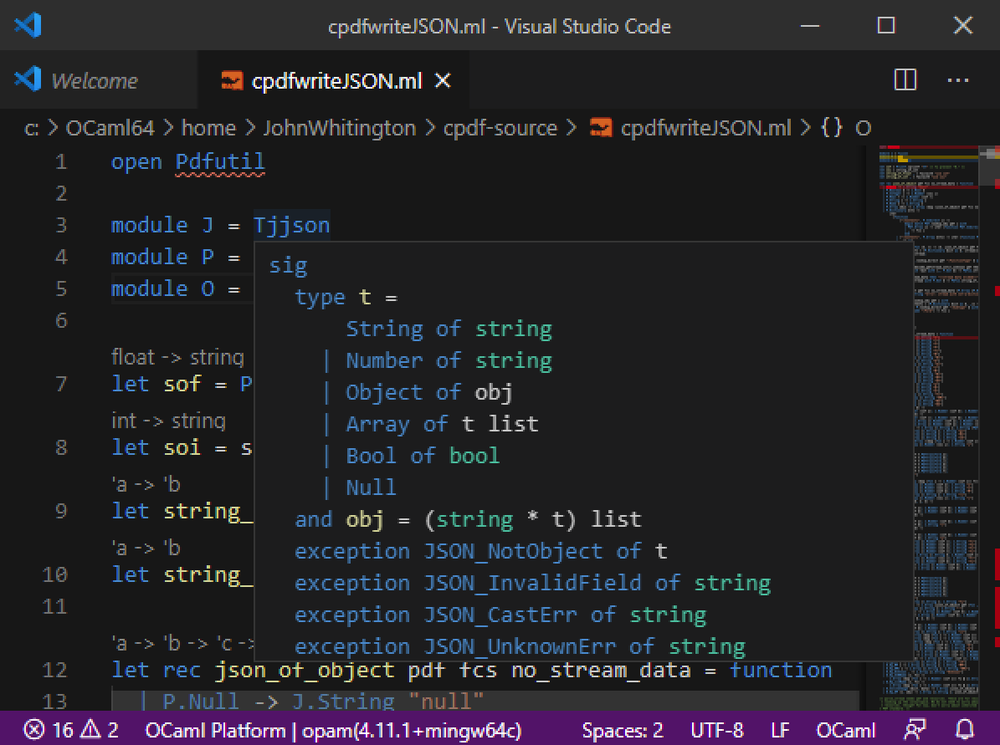

Up and Running with OCaml
This page will help you install OCaml, the Dune build system, and support for your favourite text editor or IDE. These instructions work on Windows, Unix systems like Linux, and macOS.
Installing OCaml
There are two procedures: one for Unix-like systems, and one for Windows.
For Linux and macOS
We will install OCaml using opam, the OCaml package manager. We will also use opam when we wish to install third-party OCaml libraries.
For macOS
# Homebrew
brew install opam
# MacPort
port install opamFor Linux the preferred way is to use your system's package manager on
Linux (e.g apt-get install opam or similar). Details of all installation
methods.
Then, we install an OCaml compiler:
# environment setup
opam init
eval `opam env`
# install given version of the compiler
opam switch create 4.11.1
eval `opam env`Now, OCaml is up and running:
$ which ocaml
/Users/frank/.opam/4.11.1/bin/ocaml
$ ocaml -version
The OCaml toplevel, version 4.11.1For either Linux or macOS as an alternative, a binary distribution of opam is available:
sh <(curl -sL https://raw.githubusercontent.com/ocaml/opam/master/shell/install.sh)For Windows
We use the OCaml for Windows installer which comes in 32bit and 64bit versions. This installer gives you opam and OCaml installations all in one go. It is used from within a Cygwin environment, but the executables produced have no dependency on Cygwin at all.
The OCaml top level
OCaml comes with two compilers: for native code, and for byte code. We shall use one of those in a moment. But first, let's use OCaml's top level (sometimes known as a REPL in other languages):
$ ocaml
OCaml version 4.11.1
# 1 + 2 * 3;;
- : int = 7
We typed the phrase 1 + 2 * 3 and then signalled to OCaml that we had
finished by typing ;; followed by the Enter key. OCaml calculated the
result, 7 and its type int and showed them to us. We exit by running the
built-in exit function with exit code 0:
$ ocaml
OCaml version 4.11.1
# 1 + 2 * 3;;
- : int = 7
# exit 0;;
$There are two ways to improve your experience with the OCaml top level: you can
install the popular rlwrap on your
system and invoke rlwrap ocaml instead of ocaml to get line-editing
facilities inside the OCaml top level, or you can install the alternative top
level utop using opam:
$ opam install utopWe run it by typing utop instead of ocaml. You can read more about
utop.
Installing the Dune build system
Dune is a build system for OCaml. It takes care of all the low level details of OCaml compilation. We install it with opam:
$ opam install dune
The following actions will be performed:
- install dune 2.7.1
<><> Gathering sources ><><><><><><><><><><><><><><><><><><><><><><><><>
[default] https://opam.ocaml.org/2.0.7/archives/dune.2.7.1+opam.tar.gz
downloaded
<><> Processing actions <><><><><><><><><><><><><><><><><><><><><><><><>
-> installed dune.2.7.1
Done.A first project
Let's begin the simplest project with Dune and OCaml. We create a new directory
and ask dune to initialise a new project:
$ mkdir helloworld
$ cd helloworld/
$ dune init exe helloworld
Success: initialized executable component named helloworldBuilding our program is as simple as typing dune build:
$ dune build
Info: Creating file dune-project with this contents:
| (lang dune 2.7)
Done: 8/11 (jobs: 1)When we change our program, we type dune build again to make a new
executable. We can run the executable with dune exec (it's called
helloworld.exe even when we're not using Windows):
$ dune exec ./helloworld.exe
Hello, World! Let's look at the contents of our new directory. Dune has added the
helloworld.ml file, which is our OCaml program. It has also added our dune
file, which tells dune how to build the program, and a _build subdirectory,
which is dune's working space.
$ ls
_build dune helloworld.mlThe helloworld.exe executable is stored inside the _build/default subdirectory, so
it's easier to run with dune exec. To ship the executable, we can just copy
it from inside _build/default to somewhere else.
Here is the contents of the automatically-generated dune file. When we want
to add components to your project, such as third-party libraries, we edit this
file.
(executable
(name helloworld))Editor support for OCaml
For Visual Studio Code, and other editors support the Language Server Protocol, the OCaml language server can be installed with opam:
$ opam install ocaml-lsp-serverNow, we install the OCaml Platform Visual Studio Code extension from the Visual Studio Marketplace.
Upon first loading an OCaml source file, you may be prompted to select the toolchain in use: pick OCaml the version of OCaml you are using, e.g. 4.11.1 from the list. Now, help is available by hovering over symbols in your program:

On Windows, we must launch Visual Studio Code from within the Cygwin window, rather than by clicking on its icon (otherwise, the language server will not be found):
$ /cygdrive/c/Users/Frank\ Smith/AppData/Local/Programs/Microsoft\ VS\ Code/Code.exeFor Vim and Emacs, install the Merlin system using opam:
$ opam install merlinThe installation procedure will print instructions on how to link Merlin with your editor.
On Windows, when using Vim, the default cygwin Vim will not work with Merlin. You will need install Vim separately. In addition to the usual instructions printed when installing Merlin, you may need to set the PATH in Vim:
let $PATH .= ";".substitute(system('opam config var bin'),'\n$','','''')